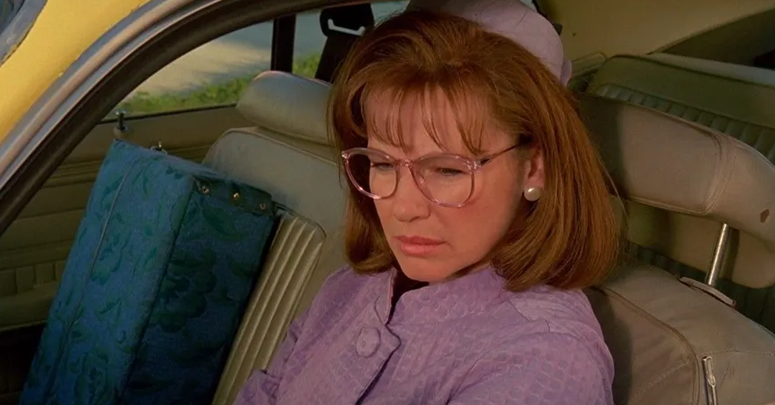

T
i
m
o
t
h
y
W
a
l
t
e
r
B
u
r
t
o
n
“누군가에게 정상인 것이 다른 누군가에게는 비정상일 수 있으니까요.”
< 팀 버튼이 말하는 팀 버튼 >
About him
Story
Style
Character
팀버튼은 혼자 있는 것을 좋아하는 편이었다. 내성적인 성격에 수줍음을 많이
타는 성격이었기 때문이다.
동네의 공동 묘지를 보며 편안한 감정을 느꼈고 공동 묘지를
'완전한' 세상이라고 인식하였다.
팀버튼이 살던 버뱅크 도시는 당시 교외 주택 지역 '살아있는 시체의 밤'처럼
느꼈다고 한다.
그는 이때부터 죽은 것이나 다름없는 사람들에게 관심을 갖기 시작했다.
고등학교 시절, 그는 예술을 통해 자신의 영혼을 풀어놓고자 했다.
그 때 만난 선생님은 그의 그림 스타일을 존중해주었다.
고등학교를 졸업한 후 캘리포니아 예술학교(California Institute of Art)에서
애니메이션을 공부했다.
2년 뒤 디즈니의 애니메이터로 일하기 시작했다.
그러나 그의 기괴한 상상은 디즈니가 추구하는 방향과 맞지 않았고 프랑캔 위니
배급을 디즈니가 거부하면서 디즈니를 나오게 된다.
그 후 워너 브러더스 발탁되어 피위의 대모험(1985)을 연출했다.
1988년에는 비틀쥬스(1988)를 발표해 전미 10위권 안에 드는 히트를 치게 된다.
이 작품은 기괴함과 기묘함을 굉장히 잘 드러낸 작품으로 팀 버튼의 스타일을
확립하는 중요한 작품이 된다.

팀 버튼의 영화세계는 동화와 현실사이를 오가는 몽환적인 미학적 요소가 차용된다.
몽환적이면서 기이한 세트,독특한 분장과 독보적인 미장센이 그의 영화를 구성한다.
그의 영화는 판타지적이라는 인식이 강하지만 실은 일반적인 판타지 영화와는 거리가 있다.
현실 사회에 대한 비판과 소외된 자들, 결함있는 자들에 대한 묘사와 감독의 개인적인
가치관을 보여준다.
아름다우면서도 기괴하고 꿈을 꾸고 있는 듯한 분위기를 표현하며 놀라운 아이디어와 기발한
상상력과 독특한 감수성을 보여준다.
고딕풍의 고성을 등장 시킨다는 점도 특징이다.
가위 손에서 에드워드가 살고 있는 외딴 성,
배트맨에서 음침한 분위기가 가득한 고담시,
유령 신부에서 중세 유럽의 고딕 양식을 본뜬 집이 그 예이다.
팀 버튼은 애니메이션보다 실사 영화감독으로 유명하다.
하지만 버튼의 애니메이션적 사고 방식은 자서전 '버튼이 버튼을 말한다'에서
스스로 자신의 영화는 이야기체가 아닌 비주얼 중심의 영화라고 했다.
특히 팀 버튼은 스스로 일반적인 애니메이션의 로케이션 디자인과
캐릭터 디자인의 요소이자 기본적 시각화의
요소(공간, 선, 형태, 톤, 컬러, 움직임, 리듬)들을 기본으로 삼아 영상을 디자인한다.
어린시절부터 괴물 영화를 좋아했기 때문에
자연스럽게 시체, 혹은 죽은 것이나 다름없는 사람들에게 관심을 가졌다.
팀 버튼은 죽은 자들을 위한 날이 있는 멕시코와 가까운 곳에도 거주했다.
이 행사에서 해골들이 거리를 활보하고 유머, 음악, 춤, 삶에 대한
축복을 보며 죽음을 긍정적으로 접근하는 데 영향을 받았다.
팀 버튼은 소외된 괴짜들을 개성 있고 따뜻하게 보듬어줌과 동시에 상업성과 예술성을 보여준다.
동화와 현실을 넘나드는 팀 버튼만의 독특한 감수성이 특징이다.
팀 버튼 감독의 영화는 자칫 판타지적인 영화를
제작한다고 생각할 수 있으나 사실 일반적인 판타지 영화와는
달리 사회에 대한 풍자도 담고 있다.
그가 창조한 영화 속 주인공 대부분은 자신을 받아주지 않는 세상에서 외롭게 투쟁한다.
또한 팀 버튼 감독의 캐릭터들은 기괴하고 우울하지만 사랑스러운 매력을 가지고 있다.
직접 쓴 시나리오의 캐릭터들은 어떤 불가피한 이유로 외면 받으나 주변 인식을
뒤바꾸고 세상을 변화 시킨다.
이들 대부분은 신체적인 결함을 가지고 있거나,
태생부터 외롭고 '어둠의 자식'에 속하지만 늘 밝은 세상에 나오려 애쓴다는 특징이 있다.
Filmography
vincent 1982
팀 버튼의 첫 단편 영화이자 데뷔작. 6분 짜리 스톱모션 애니메이션이다.
1988 BeetleJuice
처음 국내에 출시되었을 때는 < 유령수업 >이라는 제목으로 배급되었다.
영화속 비틀쥬스의 이름은 오리온자리의 알파성인 베텔게우스( Betelgeuse )에서 따왔지만,
영문식 발음을 주인공 리디아가 < Beetlejuice >로 인식해 제목이 되었다.
synopsis
뉴잉글랜드의 한적한 시골 동네에 살고 있던 젊은 부부 아담과 바바라는 큰 저택을
장만해서 나름대로 행복하게 살고 있었다.
그러나 자동차를 타고 동네에 다녀오던 중,
길가의 개를 피하려다가 강물에 빠져버리는 어처구니없는 사고를 당하고 사망하여 유령이 되어버린다.
유령이 된 아담과 바바라 부부는 사후세계의 규칙에 따라 죽은 후 125년간 집안에 갇혀 사는 신세가 된다.
그러나 두 사람은 아직 죽은지 얼마 되지 않은 탓에 유령 생활에 잘 적응하지 못한다.
그러던 어느날, 찰스 가족이 이사를 와서 아담 부부가 애지중지하며 가꿔온 저택을
그로테스크한 인테리어로 개조해 분노한 부부는 찰스 가족을 겁주어서 쫓아낼 궁리를 한다.
여러 차례의 귀신 소동이 다 실패로 돌아가 사후 세계의 쥬노라는 상담가에게 도움을 청하지만,
귀신은 사람들의 눈에 보이지 않기에 모든 노력이 헛수고로 돌아간다.
그 와중에 유령을 볼 수 있는 능력을 가진 찰스의 딸 리디아가 아담 부부가 살고 있다는 것을 알게 되고
친해지게 된다.
한편, 낙담한 아담 부부에게 사악한 미치광이 악령 비틀쥬스가 나타나 도와주겠다고 하지만 거절한다.
하지만 비틀쥬스는 단념하지 않고 찰스의 딸 리디아와의 결혼을 꿈꾸고,
찰스의 아들 오돈 때문에 아담 부부는 위기에 빠지게 된다.
비틀쥬스
유령들이 살던 집에 들어와서 귀찮게 구는 산 사람들을 쫓아내는 바이오 엑소시스트 전문가 ( 인간 퇴치사 )를 자처하는 유령. 짓궂으면서도 수다많고 유쾌한 성격으로, 작중 언급을 들어보면 죽은지 상당히 오래된 것으로 보인다. 다른 유령들에 비해 훨씬 강력한 능력을 지니고 있으며 말 그대로 산 사람을 겁주거나 위협하는데에 상당한 재능이 있다.
아담 부부
평범하고 선량한 사람들로, 유령이기는 하지만 외모나 성격은 산 사람과 크게 다를 바가 없는 새내기 유령들이다. 아직 유령이 된지 얼마되지 않은 신입인지라 유령 생활에 적응하지 못하는 등 여러모로 미숙한 모습을 보여준다.
사망하기 전 이 부부의 취미는 해리 벨라폰테의 노래를 듣는 것과 집의 꼭대기에 위치한 높은 다락방에서 마을 전체의 미니어쳐를 만드는 일이었다. 다락방은 그들이 유령이 된 후에 아지트가 되기도 한다. 그러나 이 미니어쳐 마을 묘지의 관이 비틀쥬스가 잠든 은신처이다.
리디아
본작의 히로인. 아담과 바바라 부부가 죽은 후에 저택에 새로 이사온 가족의 딸로,
우울증에 걸려 있으며 창백한 인상에 검은 계통의 옷을 고집하는 고스족 소녀.
우연히 아담과 바바라 부부가 방치한 책 초보 유령들을 위한 지침서를 접하게 되면서 사후세계에
대한 지식을 습득한다. 또한 선천적으로 유령을 보거나 들을 수 있는 신기를 지녔다.
때문에 이를 계기로 아담 부부와 친해진다.
그러나 비틀쥬스가 리디아의 아름다운 외모를 탐하면서 큰 사건에 휘말려든다.
찰스
리디아의 아버지. 이 시골 마을로 이사온 것도 약해진 심신을 추스리기 위해 요양차 내려온 것으로 보인다. 큰 저택을 사들인다거나, 딜리아가 값비싼 장식으로 집안을 치장해도 인테리어가 꼴보기 싫다고 툴툴댈뿐 돈 문제에 대해서 별 내색을 하지 않는 것을 보면 매우 부유한 것으로 보인다.
딜리아
리디아의 새어머니. 자칭 현대 예술가이며 다소 괴짜같은 성격의 소유자. 취향은 초현실주의에 가까운 것으로 보인다. 각종 기괴한 조각상과 뒤틀린 형상의 소품으로 비교적 멀쩡해 보였던 저택을 유령의 집처럼 만들어버리는 바람에 아담과 바바라 부부가 분노하여 비틀쥬스를 불러들이게 되는 결과를 불러온다.
Edward Scissorhands 1991
팀 버튼 감독의 가장 아름다운 영화로 손꼽힌다. 날카로운 가위손을 가진 채 외롭게 지내던 에드워드가 마을로 내려와 평범한 일상에 적응하고, 첫눈에 사랑에 빠지는 어른을 위한 동화.
synopsis
어느 눈 오는 밤, 할머니가 손녀딸에게 외딴 성에 관한 이야기를 들려준다.
성에 사는 외로운 과학자는 제작된 채소 써는 기계를 만들어 몇 번의 개조를 거친 결과
인간의 용모와 마음을 가진 인조인간 에드워드가 되었다.
크리스마스 선물로 발명가가 그에게 평범한 손을 선물해 주었으나 에드워드의 손을 교체하려던 순간
발명가가 심장 마비로 사망한다.
그 후 에드워드는 가위로 된 손을 한 채 성에서 혼자 외롭게 살아간다.
화장품 외판원 펙은 마을 언덕 외딴 성에서 상처투성이 창백한 얼굴과 날카로운
가위손 때문에 외롭게 살고 있는 에드워드를 만나 자신의 집으로 데려온다.
평범한 일상에 무료해하던 마을 사람들에게 큰 관심거리가 된 에드워드.
가위손 때문에 펙의 딸 킴과의 첫 대면은 순탄치 않았지만 에드워드는 순수하고 아름다운
킴을 첫눈에 사랑하게 된다.
하지만, 그녀의 남자친구의 질투와 이웃들의 편견으로 도둑으로 몰리며 더 큰 오해에 빠지게 된다.
Character
Edward

미완성된 손으로 인해 뭐든 손에 닿는 것에
상처를 내는 불운한 운명을 타고나 겁도 많고 오랫동안 사람과 떨어져 있어서 그런지 말수가 거의 없고
상당히 소극적인 성격이다.
창백하고 기괴한 복장에 무섭게 생긴 외모와 달리 착하고 순수한 심성을 지녔다.
세상 물정을 잘 모르기도 하고 손끝의 가위 때문에 생긴 갖은 해프닝에
쩔쩔매기도 한다.
특기는 가위손을 이용한 주민들 헤어
손질, 얼음 조각, 정원 손질, 애견 트리밍 등이 있다.
그러나 결국 이 가위손 때문에 인간 사회에 흡수되지 못하고 다시 은둔의 삶으로 되돌아와야 했다.
Kim Boggs
금발의 아름다운 미녀. 에드워드의 진심을 알게 되고 그를 사랑하게 된다.
결국 둘의 사랑은 이루어지지 못했지만, 킴은 세월이 흘러 할머니가 된 뒤에도
그와의 짧은 사랑을 그리워한다.
Peg Boggs
화장품 외판원이자 킴의 어머니. 가위손 때문에 온통 상처투성이인 채 성에서 쓸쓸하게 살고 있는 에드워드에게 연민을 느끼고 자신의 집으로 데려오는 마음씨 착한 여성이다.